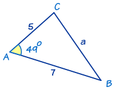
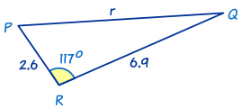

Solving SAS Triangles
"SAS" means "Side, Angle, Side"
 |
"SAS" is when we know two sides and the angle between them. |
To solve an SAS triangle
- use The Law of Cosines to calculate the unknown side,
- then use The Law of Sines to find the smaller of the other two angles,
- and then use the three angles add to 180° to find the last angle.
Example 1

In this triangle we know:
- angle A = 49°
- b = 5
- and c = 7
To solve the triangle we need to find side a and angles B and C.
Use The Law of Cosines to find side a first:
a2 = b2 + c2 − 2bc cosA
Now we use the The Law of Sines to find the smaller of the other two angles.
Why the smaller angle? Because the inverse sine function gives answers less than 90° even for angles greater than 90°. By choosing the smaller angle (a triangle won't have two angles greater than 90°) we avoid that problem. Note: the smaller angle is the one facing the shorter side.
Choose angle B:
sin B / b = sin A / a
Did you notice that we didn't use a = 5.30. That number is rounded to 2 decimal places. It's much better to use the unrounded number 5.298... which should still be on our calculator from the last calculation.
Now we find angle C, which is easy using 'angles of a triangle add to 180°':
Now we have completely solved the triangle i.e. we have found all its angles and sides.
Example 2

This is also an SAS triangle.
First of all we will find r using The Law of Cosines:
r2 = p2 + q2 − 2pq cos R
Now for The Law of Sines.
Choose the smaller angle? We don't have to! Angle R is greater than 90°, so angles P and Q must be less than 90°.
sin P / p = sin R / r
Now we will find angle Q using 'angles of a triangle add to 180°':
Mastering this skill needs lots of practice, so ...